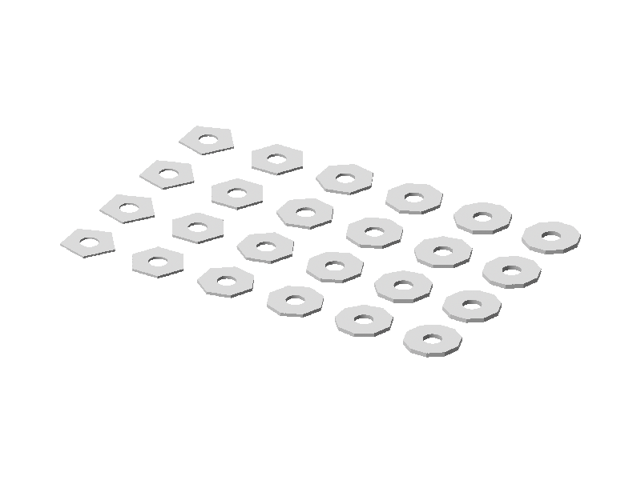
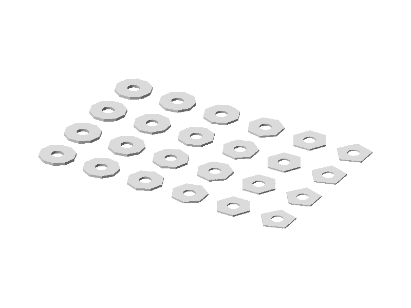

bed-washers
Drafted with AI, not yet reviewed
by Reiprinter/bed-washers.scad
Bed-levelling washers, 0.5 to 1.0 mm thick, their outlines’ sides telling the thickness in tenths: four rows of six.
Ported from src/printer/bed-washers.scad. Differences:
- The hole is a circle; the original’s is a 36-gon, a resolution rather than a mark (0.007 mm in at its corners).
Compared with the original: within 0.0074 mm.


Files
Source
// SPDX-License-Identifier: 0BSD // // Bed-levelling washers, 0.5 to 1.0 mm thick, their outlines' sides telling // the thickness in tenths: four rows of six. // // Ported from `src/printer/bed-washers.scad`. Differences: // - The hole is a circle; the original's is a 36-gon, a resolution rather // than a mark (0.007 mm in at its corners). // // Compared with the original: within 0.0074 mm. // --- Parameters --- const L = 0.1; // a tenth of a millimetre const STEP = 16.0; // between neighbouring washers const D_INNER = 3.9; const D_OUTER = 12.0; // --- Washer --- /// A washer `height` thick, standing on z = 0, its outline a polygon of /// `mark` sides. fn washer(height, mark) { cylinder(global::D_OUTER / 2, [0, height], #{sides: mark}) .difference(cylinder(global::D_INNER / 2, [-1, height + 1])) } // One washer per thickness from 5 to 10 tenths, then four such rows, at // the cost of one. let set = arrange_row([ washer(L * 5, 5), washer(L * 6, 6), washer(L * 7, 7), washer(L * 8, 8), washer(L * 9, 9), washer(L * 10, 10), ], [STEP, 0]); draw(set.repeat_grid([0, STEP], [1, 4]));